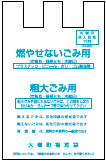

南十勝環境衛生センター（ごみ処理施設） ５-２８１０
種類 |
 | ||
１０Ｌ |
３００円 |
|
３００円 |
２０Ｌ |
５００円 |
５００円 |
|
３０Ｌ |
９００円 |
９００円 |
９００円 |
４５Ｌ |
１，２００円 |
１，２００円 |
|
以下のごみは収集しません。
ﾊﾞｯﾃﾘ‐ |
消火器 |
タイヤ |
ガスボンベ |
農薬 |
パソコン |
|
|
|
|
|
|
| 販売店に相談して下さい | 販売店に相談して下さい | 販売店に相談して下さい | 販売店に相談して下さい | 販売店に相談して下さい | パソコンメーカへ |
収集しないもの ※次のものはごみとして収集しませんのでご注意願います。
・テレビ（ブラウン管・液晶・プラズマ）・冷蔵庫冷凍庫・洗濯機・衣類乾燥機・エアコンこれらの商品は買い替え時に渡すか以前に買った小売店に引き取ってもらってください。
・事業系ごみとは、店舗、会社、工場、事業所などの事業活動によって発生するごみのことです。
・タイヤ・ホイル・バッテリー等自動車部品・エンジンオイル・バイク・ガスボンベ・消火器・農薬類・農機具・漁網・ロープ・建設廃材（物置等を取り壊した廃材や鉄板も含みます）
冷蔵庫・冷凍庫・洗濯機・衣類乾燥機・テレビ・エアコン |
冷蔵庫・冷凍庫・洗濯機・衣類乾燥機・テレビ・エアコン
一番近いゴミの日とジャンルを上から順に表示しています。
ゴミのジャンルをタップすると、捨てることが可能なゴミの一覧を見ることができます
お住まいの地域を選択することで、ゴミ収集日が自動的に更新されます。
コードで、世界をHappyに。
各地域には様々な課題があり、解決するためのコミュニティ（団体）も数多くあります。
課題の中には、ITやデザインの力で解決できるものも多くありますが、全てのコミュニティにそのスキル（技術）が備わっているわけではありません。
Code for Kanazawa（CfK）は、市民の課題を集め、その課題を整理・分析した上で、メンバーが実際に課題解決となるソフトウェアやハードウェア（仕組みや方法）を開発します。
私たちは、デザインをして、ソフトウェアコードを書き、課題を解決するサービスを完成させるのです。さらに、そのサービスを提供し続ける力も持ちます。
CfKは市民のための組織です。行政や民間企業の影響を受けずに中立・公益の立場から物事を判断するよう心がけています。
公式サイト
http://www.codeforkanazawa.org/